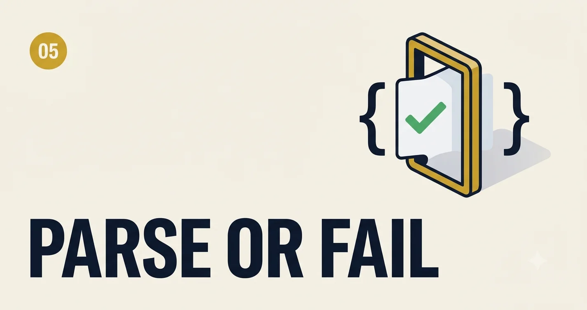

Structured Output and JSON Reliability
If your LLM output is feeding automations, workflows, or APIs, "mostly valid JSON" is a production incident waiting to happen. This handbook is an incident-driven guide for building outputs that parse reliably, degrade gracefully, and stay trustworthy at scale.
The hidden cost of unreliable JSON
A broken JSON response is not just a parsing problem. It can create duplicate tickets, wrong downstream actions, payment mishandling, or silent data corruption. In enterprise systems, output reliability sits on the same critical path as authentication and database correctness.
Reliability starts at prompt and schema design, not in catch blocks.
Incident log: seven failure patterns I keep seeing
Incident 01
Trailing commentary outside JSON
Symptom: Model returns valid JSON, then an explanatory sentence below it.
Fix: Hard output contract: "Return JSON only. No preamble. No markdown."
Incident 02
Field name drift across requests
Symptom: `customer_id` becomes `clientId` or `customerId` randomly.
Fix: Enforce exact schema keys and reject unknown fields during validation.
Incident 03
Type instability
Symptom: Numeric fields return as strings under edge cases.
Fix: Explicit per-field type constraints and post-parse coercion policy.
Incident 04
Partial object truncation
Symptom: Large output hits token cap and returns incomplete JSON object.
Fix: tighter output size budgets + chunked tasks + resumable generation protocol.
Incident 05
Hallucinated optional fields
Symptom: Model invents new properties not in schema, breaking strict parsers.
Fix: define `additionalProperties: false` and drop anything extra.
Incident 06
Nested array shape mismatch
Symptom: Item-level object keys vary in one array payload.
Fix: add nested schema examples and invalid examples in prompt context.
Incident 07
Null semantics confusion
Symptom: Missing values alternate between empty string, `null`, `"N/A"`.
Fix: strict null policy per field and normalization step after parse.
Designing the contract: schema first, prompt second
For structured output, start with a machine contract and then align prompt instructions to that contract. The schema is source of truth; prompt text is the model-facing explanation.
{
"type": "object",
"additionalProperties": false,
"required": ["ticket_id", "severity", "summary", "actions"],
"properties": {
"ticket_id": { "type": "string" },
"severity": { "type": "string", "enum": ["low", "medium", "high", "critical"] },
"summary": { "type": "string", "maxLength": 240 },
"actions": {
"type": "array",
"minItems": 1,
"items": {
"type": "object",
"additionalProperties": false,
"required": ["owner", "task"],
"properties": {
"owner": { "type": "string" },
"task": { "type": "string" },
"due_date": { "type": ["string", "null"] }
}
}
}
}
}Prompt instruction paired with that schema
Return a JSON object that matches the exact schema.
Rules:
1) Output JSON only.
2) Use only these keys: ticket_id, severity, summary, actions.
3) Do not add extra fields.
4) Use null (not empty string) when due_date is unknown.
5) If required information is missing, set severity="medium" and mention gaps in summary.Reliability architecture: parse, validate, repair, retry
flowchart LR
G[LLM generate] --> P[Parse JSON]
P --> V{Schema valid?}
V -->|yes| OK[Accept + downstream]
V -->|no| R[Repair prompt + truncated raw]
R --> G2[Regenerate once]
G2 --> P2[Parse again]
P2 --> V2{Valid?}
V2 -->|yes| OK
V2 -->|no| F[Fail closed + alert]
| Stage | What happens | On failure | Output |
|---|---|---|---|
| Parse | Attempt strict JSON parse | Move to repair step | Raw object or parse error |
| Validate | Run schema validation | Collect exact field errors | Valid payload or error list |
| Repair prompt | Send minimal correction request with errors | Retry with deterministic settings | Candidate corrected payload |
| Retry policy | Max retry count + backoff | Escalate to safe fallback | Final payload or fallback event |
async function reliableStructuredCall(input) {
const raw = await callModel(input);
const parsed = tryParseJson(raw);
if (!parsed.ok) {
return retryWithRepair("JSON parse failed", raw.error);
}
const validation = validateSchema(parsed.value);
if (!validation.ok) {
return retryWithRepair("Schema validation failed", validation.errors);
}
return { ok: true, payload: normalizeNulls(parsed.value) };
}
async function retryWithRepair(reason, details) {
const repairPrompt = buildRepairPrompt({ reason, details });
const repaired = await callModel(repairPrompt, { temperature: 0.1 });
// Re-run parse + schema validation; if still fails, fallback.
return finalValidationOrFallback(repaired);
}Many practical prompt examples
Example 1: Invoice extraction
Extract invoice fields from OCR text.
Return JSON only:
{
"invoice_number": "string",
"invoice_date": "YYYY-MM-DD or null",
"currency": "ISO code",
"line_items": [{ "description": "string", "amount": number }],
"total": number
}
If date is ambiguous, return null.Example 2: Support ticket triage output
Classify ticket into queue and urgency.
Return strict JSON object with:
queue (billing|technical|account|security)
urgency (low|medium|high|critical)
reason (max 120 chars)
needs_human_review (boolean)Example 3: Knowledge-grounded answer + citations
Return:
{
"answer": "string",
"citations": [{"doc_id":"string","snippet":"string"}],
"confidence": "high|medium|low"
}
Do not answer without at least one citation.
If no citation available, set confidence="low" and answer="insufficient evidence".Example 4: SQL query planner output
Return JSON only:
{
"intent": "string",
"tables": ["string"],
"filters": [{"column":"string","operator":"=","value":"string"}],
"limit": number
}
Never include SQL text in this step.Example 5: Multi-action workflow
Generate workflow plan as JSON:
{
"workflow_id": "string",
"steps": [
{"index": 1, "action": "string", "owner": "string", "blocking": true}
],
"risk_flags": ["string"]
}What to monitor in production
- Parse success rate (target > 99.5%)
- Schema validation pass rate (target > 99%)
- Average repair retries per request
- Fallback activation rate
- Top failing fields by frequency
- Latency impact of repair cycle
Operational playbook for teams
If reliability drops, debug in this order: schema drift, prompt drift, model parameter drift, payload size growth, and then infrastructure issues. Most teams reverse this order and lose days.
Rapid response steps (first 60 minutes)
- Freeze prompt version and route traffic to last known-good variant.
- Inspect top 20 failed payloads and classify failure type.
- Patch schema/prompt mismatch first; do not tune randomness first.
- Deploy repair prompt update and monitor pass rate every 10 minutes.
Final challenge
Pick one endpoint in your app and enforce strict schema validation with repair retries this week. Measure parse success, validation success, and fallback rate before and after. If those metrics improve and your downstream incidents drop, you just upgraded your LLM layer from "best effort" to "production grade."